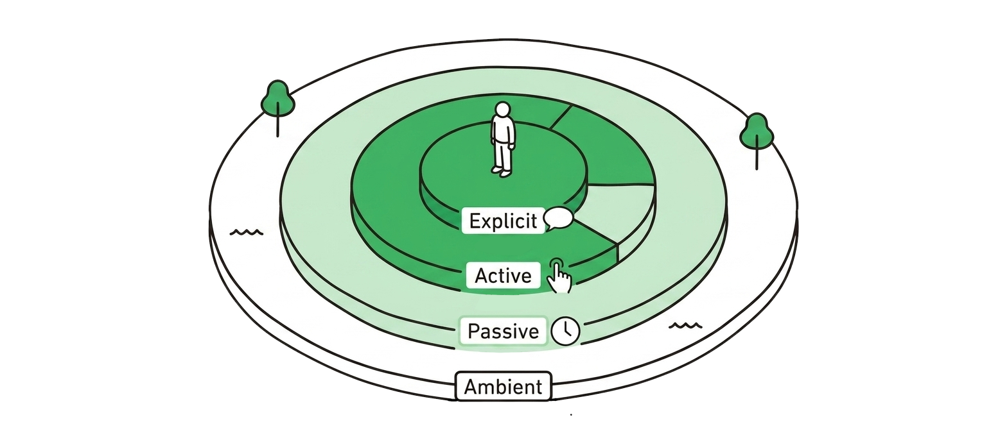

Explicit Intent
声・タップ・テキストで何が欲しいかを明示する。推論は一切不要。
例
「お母さんに電話して」 / 「20分タイマーをセットして」
AIはただ実行する。
AIはただ実行する。
Context Grammar — Floor 1
AIが「場の空気」を読む前に、まずユーザーが何を望んでいるかを読まなければならない。それが言葉になることもあれば、ならないことの方が多い。Intent はすべてのインタラクションを始動させる信号 — 今日の AI がほぼ例外なく見落としている、その信号だ。
Intent は Context Grammar の Floor 1。ユーザーが今この瞬間に求めているもの — 永続的な目標でも、人口統計的カテゴリでもない。2種類ある：言葉にされるものと、推論されるもの。Intent を外せば、その上のすべての Floor が崩れる。
A · メタファー
片方は注文を待つ。もう片方はあなたより先に知っている。その差は魔法ではなく、記憶と状況認識の組み合わせだ。
B · 基本構造
「Intent ＝ ユーザーが言ったこと」と思いがちだが、それは半分だ。Intent は2種類あり、現実では言葉にされない方がはるかに多い。
ユーザーが声・タップ・テキストで何が欲しいかを宣言する。AIは実行するだけ。推論は不要。
何も言われていない。しかし状況（Token）× 記憶（Brain）の交差から、AIはおそらくの意図を推論できる。
C · 発生のしくみ
Implicit Intent は偶然に現れるものではない。現在の状況信号（Token）と蓄積された記憶（Brain）の交差から生まれ、Coordinator がその照合を行う。三つのうちどれか一つでも欠ければ、推論は成立しない。
D · シナリオ
ソウタ（11歳）は朝、サッカーシューズを履こうとして顔をしかめる。何も言わない。それでも家のAIはすでに92%の確信で彼の Intent を把握している。どうやって？
（ドアの前で眉をひそめ、サッカーシューズに悪戦苦闘するソウタ）
— 火曜 7:42 · 山城家 · 発話ゼロ
E · アーキテクチャ
「記憶のない Intent は推測にすぎない。」しかしその記憶は、一つの巨大なデータベースではない。Context Grammar では、家は複数の Brain を並列で動かし、それぞれが固有の役割を持つ。Implicit Intent は Coordinator がそれらをまとめて読んで初めて生まれる。
家族一人につき一つ。3層構造 — Identity Layer（ソウタは11歳、サッカー部）、Learning Layer（靴のサイズは3〜4ヶ月ごとに変わる）、Now Layer（今朝の歩き方がいつもと違う）。Implicit Intent の「主語」を決める。
購買履歴・未解決の家事・予算の優先度・過去の失敗パターン（「前シーズンも靴の交換が遅れた」）。どの個人の Brain にも映らない家族レベルのコンテキストを提供する。
家族カレンダー・学校のスケジュール・出張・試合日程。Implicit Intent の緊急度を決める。土曜に試合がなければ靴は待てる。5日後に試合があれば「今すぐ買う」になる。
Brain ではなく、Brain 横断の推論レイヤーだ。Token を Person・Household・Calendar と同時に読み、矛盾を解消し、単一の Intent 命題に集約する。Disclosure Dial と Autonomy Dial の設定もここで参照される。
F · 4チャンネル
Explicit / Implicit の区別は正しい出発点だ。しかし実装時は、Implicit を3つのサブタイプに分けると設計判断が明確になる。Floor 1 は合計4チャンネルをカバーする。

声・タップ・テキストで何が欲しいかを明示する。推論は一切不要。
何も言わない。しかし今の行動が、何を求めているかを示している。
ユーザーにパターンがある。この瞬間がそれに一致する — だからAIはたいていこうなると知っている。
継続的な背景シグナル。具体的なリクエストではなく、環境が守るべき状態だ。
Type 2〜4 はすべて Implicit Intent のサブタイプだ。今日の AI が扱えるのは Type 1 だけ。残り3つは「スマホがやってくれたらいいのに、でも絶対やってくれない瞬間」だ。Context Grammar は4つすべてを構造的に扱えるようにする。
G · Intent vs JTBD
プロダクト経験のあるデザイナーは Intent と JTBD を混同しがちだ。どちらも必要だが、まったく異なる時間軸で動いている。
ユーザーがプロダクトに「雇用」する持続的な目標。一度定義されれば、数ヶ月〜数年有効。
ユーザーが「今この瞬間」に何を望んでいるかという瞬間的なシグナル。分ごと・タップごと・部屋の移動ごとに更新される。
JTBD は何を作るべきかを教える。Intent は次の200ミリ秒でプロダクトが何をすべきかを教える。両方必要だ。片方だけでは、よく調査されているのに常にうるさいプロダクトか、レスポンシブだが的外れな問題を解くAIのどちらかになる。
H · 数式
Implicit Intent は特定の関数によって生成される。Coordinator がそれを実行する。出力は常に命題＋確信スコアのペア — 断言だけのアウトプットはない。
出力は常に命題＋確信度のペア。確信度は Autonomy Dial のステージ選択への入力となる。
I · つながり
よくある疑問：「Intent は Token の一つではないのか？」違う。Intent と Token は別々の層だ。Intent は何が望まれているかだ。Token はその望みがどう実現されるかを形作る状況の事実だ。
Intent → 8 Tokens → 実行 フロー
J · よくある質問
Q1. Intent は「ゴール」と同じものでは？
違う。ゴール（Jobs-to-be-Done）は長期目標だ：「今年中に体重を落とす」。Intent は瞬間レベルのシグナル：「次の1分間に何が欲しいか」。ゴールは年次。Intent は分次。ゴールはロードマップに入る。Intent はランタイムで動く。どちらも重要だが、まったく別のものだ。
Q2. Implicit Intent は不気味では？ 当てられているみたいで。
だからこそ Disclosure Dial と Autonomy Dial が存在する。ユーザーは「ここまでは推論してOK、それ以上は聞いて」とドメインごと・人ごと・Brain ごとに設定できる。ソウタの靴の件が3つの Brain（Person × Household × Calendar）をまたいでいるのは、許可があるからだ。アオイの健康データは彼女の Person Brain の中だけにある。推論は許可のある場所でしか起きない。
Q3. Implicit Intent が外れたらどうなる？
外れることを前提に設計し、コストを低く保つ。確信度が Autonomy Dial のステージを決める。92% でもワンタップ確認であり、無音自動購入ではない。50% なら通知なし — Person Brain の Learning Layer にメモが残るだけ。設計によってコストを低くした失敗。気づかないまま間違った購入が行われるのは絶対に許容されない。
Q4. ChatGPT / Siri / Samsung Family Hub と何が違う？
ChatGPT と Siri は Explicit Intent だけに応答する — タイプするか話すかを待つ。Apple Intelligence と Samsung Family Hub は Implicit の一部（家族プロファイル・習慣学習・最大6名分のプロファイル・Voice ID・AI Vision）を持つ — ただし構造化された Intent モデルはない。Context Grammar は Implicit Intent を「Token × Multiple Brain の交差」として構造化し、Coordinator が仲介することを提案する — 「熟練スタッフの水の補充」をデザインで再現可能にする試みだ。
Q5. Intent はどこに保存される？
Intent 自体は保存されない。瞬間レベルのシグナルであり、永続的な記憶ではない。ソウタの「サッカーシューズが必要」という Intent はこの朝のもの — 明日の朝には別の Intent がある。
ただし、Intent から学んだパターンは対応する Brain の Learning Layer に保存される：
·「ソウタの靴のサイズは3〜4ヶ月ごとに変わる」→ Person Brain（ソウタ）
·「山城家は試合5日前に対応できていない」→ Household Brain
·「火曜の朝は登校10分前に Cognitive Load が HIGH になる」→ Calendar Brain
Intent は流れる。パターンは残る — そしてそれぞれ別の Brain に残る。
Q6. すべての Brain を1つに統合しない理由は？
統合するとプライバシーと所有権の境界が消えるからだ。アオイの月経サイクルは彼女の Person Brain の中にある — Household Brain にも Calendar Brain にも流れるべきでない。家計は Household Brain のもの — 子どもたちの Person Brain ではない。Brain を分けることで、Disclosure Dial が「どの Brain が何をどの Brain に見せるか」を関係ごとに制御できる。すべてを統合した Brain では、この線引きができない。
Intent はAIに「何が」望まれているかを伝える。8つの Context Token はAIに「その望みが起きている瞬間に何が真実か」を伝える。組み合わさると、一語のリクエストが完全な文になる。